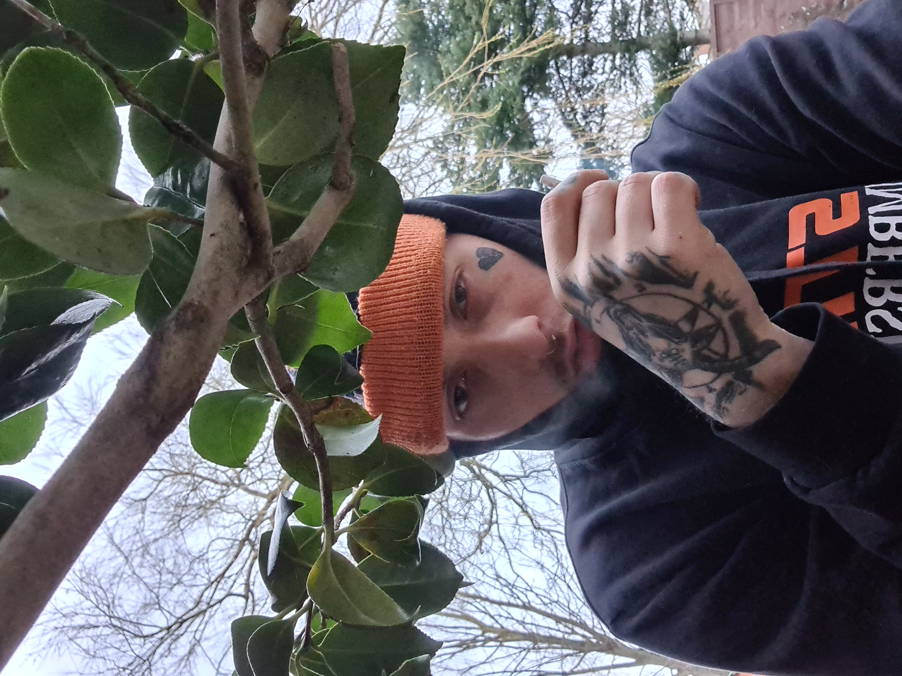

I am a reliable and confident young person who is enthusiastic and conscientious. I have a friendly,
approachable personality; I am an excellent communicator with good listening skills who enjoys
meeting people and developing good working relationships with colleagues. I have lots of practical
skills and I am a highly organised person. I am a quick learner who can follow instructions; I like to
solve problems I encounter, asking for help when I need to. I have a flexible approach to my work and
the needs of my employer. I like to set myself targets so I continually achieve things in my life.

Education
I have little in the way of education, i was home schooled from the age of 12.
Foundation Maths (Level 2)
Foundation English(Level 2)
Work Experience
Firehalt Operative
Culimeta-Saveguard Limited - Dukinfield
November 2021 to Present
Working in a fast paced environment.
Working with fibre glass material to make fire safety barriers
Lumberyard Joes Logs - Mottram
September 2018 to Present
I've learnt skills on running a team, and also learn skills using machinery within the lumber sector.
Tree Surgeon
acer spades - Ashton-Under-Lyne
October 2019 to November 2020
I learnt how to operate machinery such as chainsaws and woodchippers, I worked within a tight knit team
with efficient communication and team work
Cook/Chef
KFC - Hyde
November 2017 to October 2019
My current duties include, prepping and cooking chicken in a fast environment and general housekeeping
Store Assistant/Flt Counterbalance
Homebase - Bredbury
May 2016 to September 2017
I stocked shelves and maintained the warehouse stock, I completed my FLT counterbalance whilst
working here.
Cook
MooMoo - Reddish
May 2015 to May 2016
I loaded factory sized ovens with food ready for a production line
Operative
McVities - Manchester
October 2014 to May 2015
I worked at McVities on a production line where my duties include packing biscuits into boxes ready to
be shipped and maintaining the lines so there's no stop to production.
March 2014 - May 2014
I worked Tulip foods in Ashton Under Lyne where my duties included sorting different cuts of pork and
packing them into the appropriate packaging, keeping my work area tidy and working at a fast pace.
September and October 2013
I helped a friends Dad with his window cleaning business. As well as my primary task of cleaning windows
I had to deal with customers and handle cash payments. I had to work accurately and efficiently so that
I kept up with my cleaning team.
Placement
Job Centre
August 2013 to August 2013
I attended a short work experience placement at B&Q Ashton Under Lyne. This was arranged by the Job
Centre. My duties included locating stock in the warehouse and replenishing the shop floor
I also worked for my local newsagents delivering morning newspapers for several months; I enjoyed
working, earning my own money and got to know several of the customers on my round.
Skills
Forklift Trained
Competent in IT
Team player
Works well in under pressure